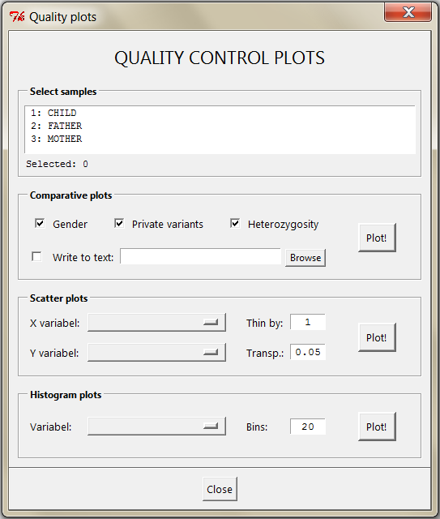

QC plots
Description
Prerequisites
Dialog
Practical tips
Algorithm
Description
Various plots for quality control and exploration of variant files.
Prerequisites
-
Some of the plots use genotype information, and thus will not work if genotype format is left blank in the Input settings.
Dialog

-
Select samples
-
Select the samples you want to include. Note: For scatter plots and histograms there will be one plot per selected sample.
-
Comparative plots
-
Each of these produce a single scatter plot, where each dot represents a sample. With 12 or fewer selected samples, they get different symbols, and a legend is included in the plot.
If Write to text is checked, the coordinates of all plotted points will be written to the specified file.
-
Gender. This is a simple gender estimator. For each sample the program computes the percentage of
heterozygous variants on the X chromosome outside of the pseudoautosomal regions PAR1 and PAR2. The result is plotted against the total number of variants in the same region.
Males are expected to have heterozygosity close to 0%, while for females the value should be similar to their autosomal heterozygosity
(typically around 60%, but in the plot this depends heavily on the filters applied). Also, men are expected to have fewer variants than females.
The plot region is divided into male/female/uncertain regions to help interpretation. However, the thresholds used for this are purely ad hoc and should not be given much emphasis.
-
Private variants. This plot shows the number of private variant positions for each sample (i.e. non-REF/REF variants not observed in any other of the selected samples),
plotted against the total number of variants. For speed and simplicity, heterozygous and homozygous variants are counted equally. Outliers in this plot, e.g. a sample with many more private variants than the others,
could be a sign of sequencing/bioinformatic errors, or it could be an individual from a very different population that the others.
Oppositely, individuals with few private variants suggest relatedness between the selected samples.
-
Heterozygosity. Here the autosomal heterozygosity ratio is plotted against the total number of autosomal variant positions for each sample.
The main use of this is catching outliers: If the samples come from a fairly homogeneous batch, there should usually be very little variance in heterozygosity.
Some deviation could be caused by inbreeding (reduces heterozygosity), or large deletions or insertions.
- Scatter plots
-
Produces a grid of scatter plots (one for each selected sample) of the two columns. Only works for numerical entries.
(If there are non-numerical entries in a column you want to plot, add an appropriate column filter before opening the plot dialog.)
Each point represents a single variant, color coded according to genotype.
If the parameter Thin by is an integer k > 1, then only every k'th variant is plotted.
Finally, the transparency of the plot symbols can be controlled by the Transp. parameter (0=fully transparent, 1=no transparency).
- Histogram plots
-
Produces histograms - one for each selected sample - of a numerical column.
Practical tips
Tip 1:
Before making QC plots it is recommended to apply filters removing low quality variants. This is particularly important for the Gender plot. All plots are produced from the filtered samples.
Tip 2:
With more than 12 samples, there is no legend in the comparative plots. To find out which sample belongs to which dot, use the Write to text option. This gives you exact coordinates for all the samples.
Tip 3:
The Gender and Private variants in combination gives a quick way of deducing who's who in a trio:
First identify the child as the one with (close to) zero private variants, and then use the gender estimates of the two remaining individuals
to pinpoint the mother and father.
Tip 4:
The scatter plots and histograms may be distorted to the point of uselessness by a few outliers. If this happens, close the QC PLOTS dialog, and add a column filter which removes the extreme values.
Then try plotting again.
Algorithm
Not relevant for this analysis.